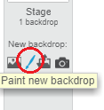

Click on the icon called
Paint new backdrop
to the right of the
Sprites
panel.

Use the drawing tool in the Backdrops tab to paint your backdrop.
When you are finished, don’t forget to give your new backdrop a sensible name.
Your browser does not support WebM video, so try FireFox or Chrome.